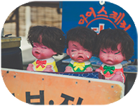
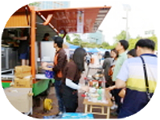
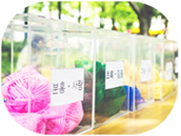

컬러풀 예술장터
컬러풀아트마켓
ㅣ
컬러풀푸드트럭
ㅣ
컬러풀예술거리
* 컬러풀아트마켓

직접 만든 다양한 핸드메이드 상품과
즐길 거리, 볼거리로 가득 찬 컬러풀대구페스티벌 예술장터
일시 : 2017. 5.27(토)~28(일) 13:00~21:00
장소 : 국채보상운동기념공원
* 컬러풀푸드트럭

세계 각국의 다양한 음식들을 한 자리에서 맛볼 수 있는 기회!
일시 : 2017. 5. 27(토)~28(일) 13:00~21:00
장소 : 공평네거리~종각네거리
* 컬러풀예술거리

현대 미술을 시민들에게 친근한 문화 양식으로 소개,
생활 속의 예술 구현
일시 : 2017. 5. 27(토)~28(일)